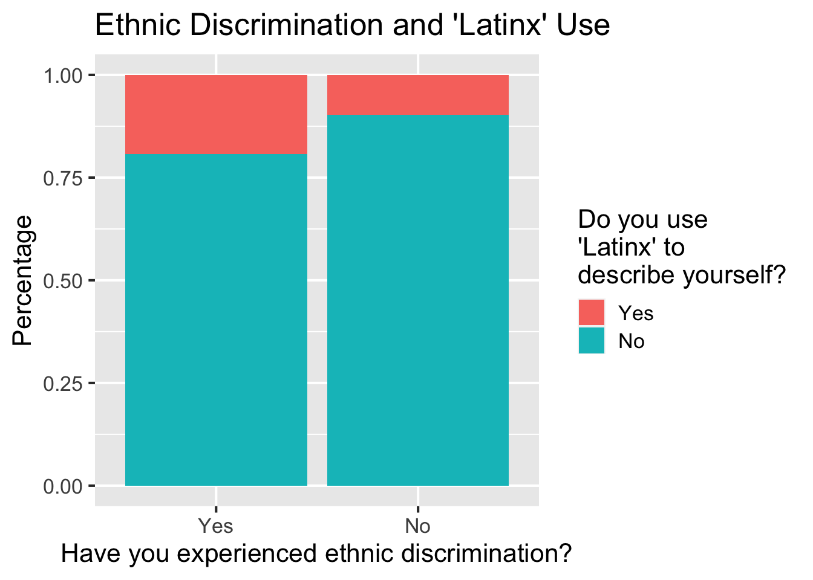
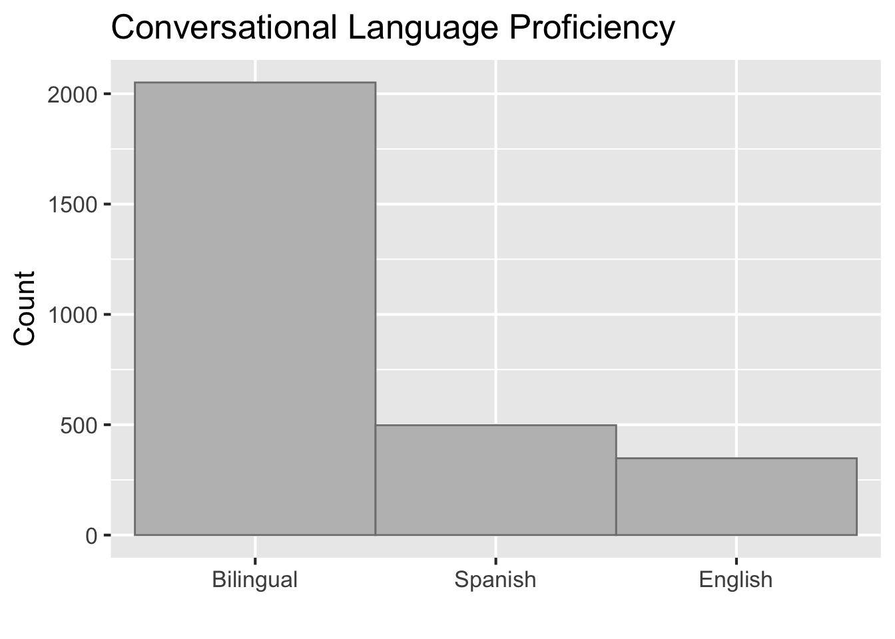

Chapter 5 Results
Our exploratory data visualization for our three primary questions of interest can be found below:
5.1 Question 1
Is there a relationship between the birth status of Latin Americans in the U.S. and their political views? Are Latin Americans born in the U.S. more or less likely to support the Republican party? Moreover, for foreign-born Latin Americans, is there a relationship between their birth country and their political preferences?
5.1.1 Question 1 Results:
We began our exploration of this question by exploring the proportion of survey respondents who prefer each political party. The following bar graph displays the proportion of Latinos who prefer each of the major political parties in the United States.
As evidenced in this graph, the majority of Latinos, 41.25%, support the Democrat party, followed by 24.69% who support independent candidates and 21.25% who prefer the Republican party. In contrast, a Gallop poll from December 2019 (the date when our survey data was collected), found that overall, 28% of all Americans supported the Republican and Democrat parties each while 41% of Americans supported independent candidates. In comparison, we can clearly see that there seems to be a trend where Latinos support the Democratic party more heavily than the overall American population. The same Gallop poll asked those who support independent candidates whether they leaned more towards the Republican or Democrat parties and found that respondents are equally split between both. We don’t have any data regarding the leanings of Latino respondents who consider themselves independent but this could be an interesting question to explore in the future. The strong support of the Democrat party observed from this graph, however, might support the hypothesis that a similar split in preference could be found within the subgroup of Latinos who support independent candidates.
https://news.gallup.com/poll/15370/party-affiliation.aspx
To explore whether this trend holds for Latinos born outside of the united states, we graphed party preference faceted on birth status.
 As seen in this graph, there appears to be a difference between Latinos born in the U.S. and those born outside of it with regards to their political preference. It appears that American-born Latinos are slightly more likely to support the Republican party and independent candidates than their foreign-born counterparts, who lean more heavily towards Democrats.
As seen in this graph, there appears to be a difference between Latinos born in the U.S. and those born outside of it with regards to their political preference. It appears that American-born Latinos are slightly more likely to support the Republican party and independent candidates than their foreign-born counterparts, who lean more heavily towards Democrats.
But, do all foreign born Latino’s share the same political preferences? The flow chart below explores the proportion of foreign-born Latinos who support each political party based on their birth country.
As can be seen, the two main nationalities that make up the population of foreign born Latinos in the United States are Mexican and Cuban. By hovering over the Cuban section, we can observe that they represent a considerable proportion of those who support the Republican party. In comparison, Mexican-born Latin Americans make up a proportionally much smaller subset of those who support the Republican party. The same trend seems to hold to some degree for all other nationalities. This indicates that there might be some inherent differences in the viewpoints of Cuban-born Latinos that might be interesting to explore in depth in the future.
Besides nationality, we wondered if income level could be related to political preference. The flow chart below attempts to visualize this question by sub-setting foreign-born Latinos by their self-reported economic health.
The flow chart shows that for every nationality, support for the Republican party is proportionally smaller as for the subset of immigrants who report their financial health to be in fair or poor shape. It is also interesting to note that although Cubans and Mexicans make up most of the foreign born residents, their proportion of respondents who reported their financial health as being in excellent shape is not significantly larger than those of other nationalities.
The flow chart below serves to summarize some of our results for this question. We can see that support for each party does very with the birth country of the respondent and that the country of birth also influences political preferences. In particular, it shows that Cubans tend to be ovverly represented in thei support for the Republican party.
5.2 Question 2
Does experiencing discrimination based on ethnic identity lead to more liberal political views (as exemplified by supporting the Democratic party)? Furthermore, are people who have experienced discrimination more likely to embrace gender-neutral ways of expressing the Latin experience?
5.2.1 Question 2 Results:
We begin our exploratory analysis of this question by creating a Mosaic plot mapping the relative proportions of people who have experienced ethnic discrimination against their party preference. We define experiencing ethnic discrimination as experiencing at least one of the following in the last 12 months:
- Been called an offensive name because of being Hispanic.
- Been criticized for speaking Spanish in public.
- Receiving a remark that they should go back to their home country.
- Been treated unfairly because of their Hispanic background.
The graph shows that the majority of respondents have not experienced a form of ethnic discrimination in the last 12 months. It also points to a possible relationship between experiencing discrimination and the respondent’s political preferences as less respondents who have experienced discrimination support the Republican party. There does not appear to be a relationship between discrimination status and support for independent candidates.

For the next section of this question, we are interested in possible relationship between having experienced discrimination and a person’s willingness to use the gender-neutral term Latinx to refer to the Latin American population. The Hypothesis is that perhaps people who experience discrimination are more aware of its discomfort and thus more willing to use terms that are more inclusive of others. To explore this, we first graph how many people in our sample have actually heard the term Latinx before. As we can see, only about 750 out of 3030 respondents have heard of this term.

We will focus on the subset of respondents who have heard the term before and explore their willingness to use the term to describe themselves as well as their belief that the term should be used to describe the whole of the Hispanic population.
The graph below notes the percentages of people who have heard the term Latinx before and their willingness to use it to describe themselves depending on whether they have experienced discrimination.

The main observation from this graph is that, across the board, very few respondents use the term Latinx to describe themselves. However, it does appear that respondents who have experienced discrimination are about twice as likely to describe themselves as Latinx than respondents who have not experienced discrimination in the last 12 months.
Although few respondents currently used ‘Latinx’, we wondered if they supported its use to describe the hispanic population as a whole. The graph below subsets the set of respondents who have heard of the term and displays their support of using the term to describe the minority broadly.
As we can see, most of our respondents on either category do not support the usage of the term to describe the Hispanic population. Nevertheless, around 40% of respondents who have experienced discrimination would support it. This shows that expereincing discrimination seems to be correlated to support for use of ‘Latinx’
Our analysis of this question, however, was limited by the fact that most of the respodnents have never heard of the term ‘Latinx’ and thus the survey did not present them with questions regarding their approval of its usage to describe the whole of the Latin American community. It is possible that people who knew of the term do so because they run in more liberal circles where gender inclusiveness is encouraged and thus their support for the term was influenced by this. Not enough data is present to make any conclusive claims. It would have been helpful if the survey designers had presented a definition of ‘Latinx’ to those who have not heard of it in order to capture their views on the term and thus have more complete data.
5.3 Question 3
What influence does language proficiency have on political preference? Is there a relationship between Spanish fluency and people’s views on the importance of certain cultural signifiers to the Latin American experience?
5.3.1 Question 3 Results:
To answer this question, we first needed to define what we would consider language proficiency. The data set included multiple variables detailing the respondents’ self reported proficiency at carrying out a conversation and reading a book in English and in Spanish. We decided to focus on the variables regarding conversational proficiency since we figured the ability to speak and understand the language was more important to forming cultural connections than reading ability. We created a new column and assigned a value to each respondent based on their conversational proficiency. If they self-reported being able to carry out a conversation in both English and in Spanish ‘very well’ or ‘pretty well’ we classified them as ‘Bilingual’. Otherwise, they were classified as Spanish or English speakers.
The graph below plots the total number of respondents in each of our three categories. The great majority of respondents (2051) could carry out a conversation in both English and Spanish and so they were classified as bilingual. 498 respondents were only fluent in Spanish and 348 respondents were only fluent in English.

Next, we explore if the distribution of party affiliation differs between the subgroups of respondents who are bilingual, strictly Spanish speakers, or strictly English speakers.
The graph below shows that Bilingual respondents and English speaking respondents have very similar distributions of party affiliation. However, less Spanish speakers seem to identify with the Democratic party and instead support more independent candidates.
This result seemed unexpected and so we decided to take a look at our Spanish speakers and analyze their place of birth to see if there were any insights to their political preferences. As shown below, a majority of the respondents who only speak Spanish were born in Cuba. In Question 1, we showed that Cuban tend to differ in their political affinity from the rest of Latinos and the fact that most striclty Spanish speakers are of Cuban decent could explain the observed difference in the graph above.
For the last section of this question, we wanted to explore if being conversationally fluent in Spanish impacted the respondents’ opinion on what cultural signifiers were most important to the Latin American identity. We explored a series of questions that asked respondents to rate 7 cultural signifiers as either essential, important but not essential, or not important to the Latin experience.
The cultural signifiers in question were:
How important is speaking Spanish to what being Hispanic means to you?
How important is having two Hispanic parents to what being Hispanic means to you?
How important is socializing with other Hispanics to what being Hispanic means to you?
How important is having a Spanish last name to what being Hispanic means to you?
How important is attending Hispanic cultural events to what being Hispanic means to you?
How important is wearing traditional Hispanic attire to what being Hispanic means to you?
How important is being catholic to what being Hispanic means to you?
We created the six mosaic plots below in order to get a quick look at possible correlations between speaking Spanish and the reported importance of these different aspects of the Hispanic identity. Overall, it appears that speaking Spanish and having two Hispanic parents are the most highly rated characteristics of the Hispanic Identity.
##
## Pearson's Chi-squared test
##
## data: table_ds10$LAN1_W58 and table_ds10$IDENSAL_a_W58
## X-squared = 555.96, df = 6, p-value < 2.2e-16##
## Pearson's Chi-squared test
##
## data: table_ds10$LAN1_W58 and table_ds10$IDENSAL_e_W58
## X-squared = 254.01, df = 6, p-value < 2.2e-16##
## Pearson's Chi-squared test
##
## data: table_ds10$LAN1_W58 and table_ds10$IDENSAL_d_W58
## X-squared = 156.24, df = 6, p-value < 2.2e-16##
## Pearson's Chi-squared test
##
## data: table_ds10$LAN1_W58 and table_ds10$IDENSAL_f_W58
## X-squared = 83.397, df = 6, p-value = 7.088e-16##
## Pearson's Chi-squared test
##
## data: table_ds10$LAN1_W58 and table_ds10$IDENSAL_b_W58
## X-squared = 65.059, df = 6, p-value = 4.196e-12##
## Pearson's Chi-squared test
##
## data: table_ds10$LAN1_W58 and table_ds10$IDENSAL_c_W58
## X-squared = 29.679, df = 6, p-value = 4.523e-05##
## Pearson's Chi-squared test
##
## data: table_ds10$LAN1_W58 and table_ds10$IDENSAL_g_W58
## X-squared = 43.13, df = 6, p-value = 1.099e-07